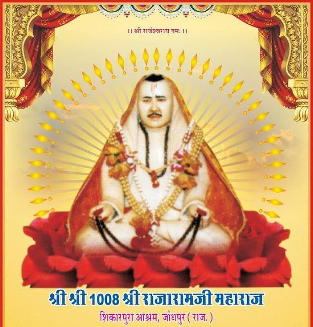
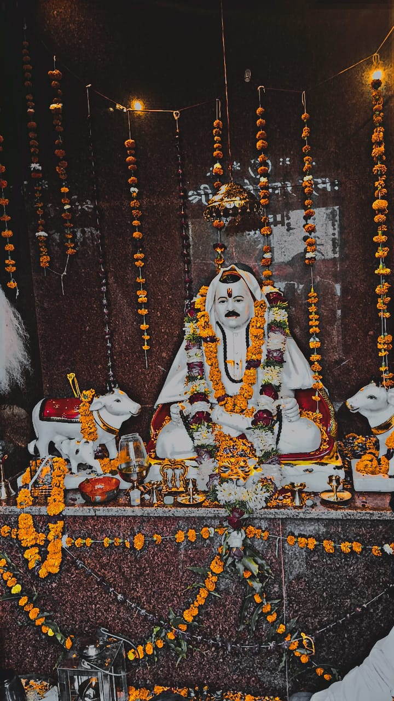
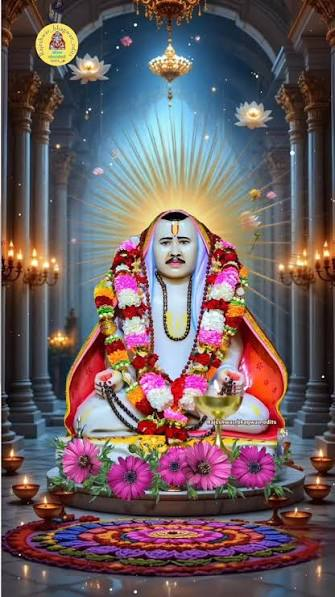

जीवन चरित्र
श्री राजारामजी महाराज का जीवन ईश्वर भक्ति, दानशीलता, सेवा और समाज सुधार की प्रेरणादायक यात्रा रहा।
श्री राजारामजी महाराज का जन्म चेत्र शुक्ला 9 सम्वत् 1939 को, जोधपुर तहसील के गाँव शिकारपुरा में, पटेल कलबी वंश की सी खांप में एक किसान के घर हुआ था। जिस समय आपकी आयु लगभग दस वर्ष की थी आपके पिता श्री हरीरामजी का देहान्त हो गया और उसके कुछ समय आपकी माता श्रीमती मोतीबाई का भी स्वर्गवास हो गया।

श्रद्धा एवं भक्ति के प्रेरणास्रोत
माता-पिता के मृत्योपरान्त आपके बड़े भाई श्री रघुनाथरामजी संन्यासियों की जमात में चले गये और आप कुछ समय तक अपने चाचा श्री थानारामजी व कुछ समय अपने मामा श्री मादारामजी भूरिया, गांव धांधिया के पास रहने लगे। बाद में शिकारपुरा के रबारियों की सांडियों रोटी कपड़ों के बदले एक साल तक चराई और गांव की गायें भी बिना हाथ में लाठी लिए दो साल तक राम रटते चराई।

कठिन परिस्थितियों में भी ईश्वर भक्ति
गांव की ग्वाली छोड़ने के बाद आपने गांव के ठाकुर साहब के घर 12 रोटियां प्रतिदिन और कपड़ों के बदले हाली का काम सम्भाल लिया। इस समय आपके होठ केवल ईश्वर के नाम रटने में ही हिला करते थे। एक दिन आपके मन में दान-पुण्य करने का विचार आया, लेकिन आप एक सम्पत्ति रहित व्यक्ति के कारण दान-पुण्य में देने के लिए अपने पास अन्य कोई वस्तु न देखकर, अपने को मिलने वाले भोजन का आधा भाग नियमित रूप से कुत्तों को डालना शुरू कर दिया। जिसकी शिकायत ठाकुर साहब से होने पर 12 रोटियां के स्थान 6 रोटियां में से 3 रोटियां व 3 में से 1 रोटी ही प्रतिदिन शुरू कर दिया। लेकिन दानवीर ने दानशीलता न छोड़ी और आधा भाग नियमित रूप से कुत्तों को डालते ही रहे।
दानशीलता और करुणा
स्वयं के पास कुछ न होते हुए भी अपने भोजन का हिस्सा जीवों के लिए समर्पित करना उनके दयालु और दानवीर स्वभाव को दर्शाता है।
इस प्रकार की ईश्वर भक्ति और दानशील स्वभाव से प्रभावित होकर देव भारती के नाम के एक पहुंचवान बाबाजी ने (जो शिकारपुरा के तालाब पर मीठावानिया बेरे के पास, जिस पर श्री राजाराम रिजका पिलाने का काम करते थे, अपना आसन जमाकर रहा करते थे) एक दिन श्री राजारामजी को अपना सच्चा सेवक समझ कर अपने पास बुलाया और अपनी रिद्धि-सिद्धि श्री राजारामजी को देकर बाबाजी ने जीवित समाधि ले ली। उसी दिन उधर ठाकुर साहब ने विचार किया राजिया (श्री राजारामजी का ग्रामीण नाम) को वास्तव में एक रोटी प्रतिदिन कम ही है और किसी भी व्यक्ति को जीवित रहने के लिए काफी नहीं है, अत: ठाकुर ने आपके भोजन की मात्रा फिर से निश्चित करने के उद्देश्य से उन्हें अपने घर भोजन करने बुलाया।
भक्ति और साधना का अद्भुत प्रसंग
शाम के समय श्री राजारामजी ईश्वर का नाम लेकर ठाकुर साहब के यहां भोजन करने के लिए गये। आपने बातों ही बातों में साढ़े सात किलो वजन के आटे की रोटियां अरोग ली फिर भी आपको भूख मिटने का आभास नहीं हुआ। ठाकुर व उसकी पत्नी यह देखकर अचरज करने लगी। उसी दिन शाम को श्रीराजारामजी अपना हाली का धंधा ठाकुर को सौंप कर तालाब पर जोगमाया के मंदिर में आकर रामनाम रटने बैठ गये। उधर गांव के लोगों को चमत्कार का समाचार मिलने पर उनके दर्शनों के लिए आने का ताता बंध गया।
दूसरे दिन आपने द्वारका तीर्थ करने का विचार किया और आप दण्डवत करते-करते द्वारका रवाना हुए। पांच दिनों में शिकारपुरा से पारलु पहुंचे और एक पीपल के पेड़ के नीचे हजारों नर-नारियों के बीच अपना आसन जमाया और उनके बीच से एकाएक इस प्रकार गायब हुए कि किसी को पता न लगा। दस मास बाद द्वारका तीर्थकर आप शिकारपुरा में जोगमाया के मंदिर में प्रकट हुए और अद्भुत चमत्कारी बातें करने लगे जिस पर विश्वास कर लोग उनकी पूजा करने लग गये। आपको जब लोग अधिक परेशान करने लग गये तो आपने 6 मास का मौन रखा। जब आपने शिवरात्रि के दिन मौन खोला उस समय उपस्थित हजार नर-नारियों को व्याख्यान दिया और अनेक चमत्कार बताये जिनका वर्णन आपकी जीवन चरित्र नामक पुस्तक में विस्तार से किया गया है।

आस्था और साधना की पवित्र भूमि
महादेवजी के उपासक होने के कारण आपने शिकारपुरा तालाब पर एक महादेवजी का मंदिर बनवाया, जिसको आजकल हम श्री राजारामजी के मंदिर के नाम से पुकारते हैं। जिसकी प्रतिष्ठा करते समय अपने भाविकों व साधुओं का सत्कार करने के लिए प्रसाद के स्वरूप नाना प्रकार के पकवान बनवाये, जिसमें 250 क्विंटल घी खर्च किया गया। उस मंदिर के बन जाने पर आपके बड़े भाई रघुनाथजी भी जमात से पधार गये और दो साल साथ-साथ तपस्या करने के बाद श्री रघुनाथरामजी ने समाधि ले ली। आपके भाई की समाधि के बाद आपने अपने स्वयं के रहने के लिए एक बगीची बनाई, जिसको आजकल श्रीराजाराम आश्रम के नाम से पुकारा जाता है।
श्री राजारामजी महाराज ने सांसरियों को अज्ञानता से ज्ञानता की ओर लाने के उद्देश्य से बच्चों को पढ़ाने-लिखाने पर अधिक जोर दिया। आपने जाति, धर्म, रंग आदि भेदों को दूर करने के लिए समय-समय पर अपने व्याख्यान दिये और बाल-विवाह, कन्या-विक्रय, मृत्यु भोज जैसी समाज की बुराईयों की अन्त करने का अथक प्रयत्न किया। आपने लोगों को नशीली वस्तुओं के प्रयोग से कोसों दूर रहने का उपदेश दिया और शोषण विहीन समाज की स्थापना के उद्देश्य को अपनी खुद की कमाई पर निर्भर होकर धर्मात्माओं की तरह समाज में पथ-प्रदर्शन किया।
समाज के लिए संदेश
शिक्षा
बच्चों को पढ़ाने-लिखाने पर जोर
समानता
जाति, धर्म और रंग के भेद से ऊपर
सेवा
समाज के कमजोर वर्ग की सेवा
भक्ति
ईश्वर भक्ति और सदाचार का संदेश
आप एक अवतार थे, इस संसार में आये और समाज के कमजोर वर्ग की सेवा करते हुए श्रावण वदि 14 संवत् 2000 को इस संसार को त्याग करने के उद्देश्य से जीवित समाधि लेकर चले गये।

॥ श्रद्धा • सेवा • समर्पण ॥